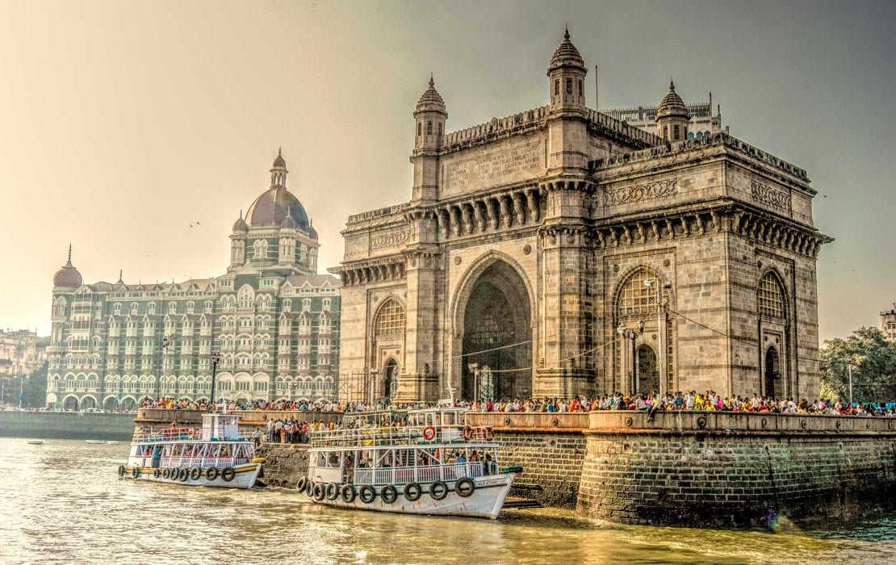

The United States of America (USA), commonly known as the United States (U.S.) or America, is a country primarily located in North America. It consists of 50 states, a federal district, five major unincorporated territories, and nine Minor Outlying Islands.[i] It includes 326 Indian reservations. The U.S. is the world's third-largest country by land and total area
Canada
Canada is a country in North America. Its ten provinces and three territories extend from the Atlantic Ocean to the Pacific Ocean and northward into the Arctic Ocean, making it the world's second-largest country by total area, with the world's longest coastline. Its border with the United States is the world's longest international land border.
Dubai
Dubai (/duːˈbaɪ/, doo-BY; Arabic: دبي, romanized: Dubayy, IPA: [dʊˈbajj], Gulf Arabic pronunciation: [dəˈbaj]) is the most populous city in the United Arab Emirates (UAE) and the capital of the Emirate of Dubai, the most populated of the country's seven emiratesEstablished in the 18th century as a small fishing village, Dubai grew into a regional trading hub from the early 20th century and grew rapidly in the late 20th and early 21st centuries
Rajasthan
Rajasthan (Hindi: [rɑːdʒəsˈtʰɑːn] ⓘ; lit. 'Land of Kings')[12] is a state in northern India.[13][14][15] It covers 342,239 square kilometres (132,139 sq mi) or 10.4 per cent of India's total geographical area. It is the largest Indian state by area and the seventh largest by population. It is on India's northwestern side
Japan
Japan (Japanese: 日本, [ɲihoɴ] ⓘ, Nippon or Nihon,[nb 1] and formally 日本国, Nippon-koku or Nihon-koku)[nb 2] is an island country in East Asia. It is in the northwest Pacific Ocean and is bordered on the west by the Sea of Japan, extending from the Sea of Okhotsk in the north toward the East China Sea, Philippine Sea, and Taiwan in the south.
Kashmir
Kashmir (IPA: [kaʃmiːr]) is the northernmost geographical region of the Indian subcontinent. Until the mid-19th century, the term "Kashmir" denoted only the Kashmir Valley between the Great Himalayas and the Pir Panjal Range. Today, the term encompasses a larger area that includes the India-administered territories of Jammu and Kashmir

Mubai
Mumbai (/mʊmˈbaɪ/ ⓘ, Marathi: [ˈmumbəi], IAST: Muṃbaī; also known as Bombay[a] — the official name until 1995) is the capital city of the Indian state of Maharashtra. Mumbai is the de facto financial centre and the most populous city of India with an estimated city proper population of 12.5 million (1.25 crore).
Russia
Russia (Russian: Россия, romanized: Rossiya, [rɐˈsʲijə]), or the Russian Federation,[b] is a country spanning Eastern Europe and Northern Asia. It is the largest country in the world by area, extends across eleven time zones, and shares land boundaries with fourteen countries.[c] It is the world's ninth-most populous country and Europe's most populous country.
Australia
Australia, officially the Commonwealth of Australia,[16] is a sovereign country comprising the mainland of the Australian continent, the island of Tasmania, and numerous smaller islands.[17] Australia is the largest country by area in Oceania and the world's sixth-largest country. Australia is the oldest,[18] flattest,[19] and driest inhabited continent,[20][21] with the least fertile soils.
South Africa
South Africa, officially the Republic of South Africa, is the southernmost country in Africa. It is bounded to the south by 2,798 kilometres (1,739 mi) of coastline that stretches along the South Atlantic and Indian Oceans;[14][15][16] to the north by the neighbouring countries of Namibia, Botswana, and Zimbabwe; and to the east and northeast by Mozambique and Eswatini. It also completely enclaves the country Lesotho
Greenland
Greenland (Greenlandic: Kalaallit Nunaat, pronounced [kalaːɬːit nʉnaːt]; Danish: Grønland, pronounced [ˈkʁɶnˌlænˀ]) is a North American autonomous territory of the Kingdom of Denmark.[13] It is the largest country within the Kingdom and one of three countries which form the Kingdom, the others being Denmark proper and the Faroe Islands; the citizens of all three countries are citizens of Denmark.
New Zealand
New Zealand (Māori: Aotearoa [aɔˈtɛaɾɔa]) is an island country in the southwestern Pacific Ocean. It consists of two main landmasses—the North Island (Te Ika-a-Māui) and the South Island (Te Waipounamu)—and over 700 smaller islands. It is the sixth-largest island country by area and lies east of Australia across the Tasman Sea and south of the islands of New Caledonia, Fiji, and Tonga.